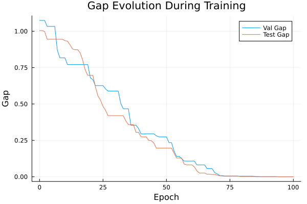
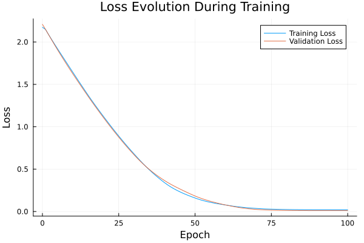

Basic Tutorial: Training with FYL on Argmax Benchmark
This tutorial demonstrates the basic workflow for training a policy using the Perturbed Fenchel-Young Loss algorithm.
Setup
using DecisionFocusedLearningAlgorithms
using DecisionFocusedLearningBenchmarks
using MLUtils: splitobs
using PlotsCreate Benchmark and Data
b = ArgmaxBenchmark()
dataset = generate_dataset(b, 100)
train_data, val_data, test_data = splitobs(dataset; at=(0.3, 0.3, 0.4))(DecisionFocusedLearningBenchmarks.Utils.DataSample{@NamedTuple{}, @NamedTuple{}, Matrix{Float32}, Vector{Float32}, Vector{Float32}}[DataSample(x=Float32[-1.43787 -1.61545 … -0.199438 0.946266; 1.3782 -1.45768 … -0.228945 0.614388; … ; 0.82298 -0.000952683 … 0.609823 0.193184; -0.310444 -0.952317 … 0.121987 -0.494475], θ=Float32[-0.272677, 0.81962, 0.663139, -0.266701, -0.362534, -0.768643, -0.89504, 0.581664, 0.412172, 0.528394], y=Float32[0.0, 1.0, 0.0, 0.0, 0.0, 0.0, 0.0, 0.0, 0.0, 0.0]), DataSample(x=Float32[-0.164986 1.09947 … 0.185415 0.486295; -0.622777 0.233204 … 0.12067 0.939755; … ; 1.78165 0.577428 … 0.0579107 -0.125526; 0.425506 -0.75409 … -0.858773 -0.754402], θ=Float32[1.4455, 1.81087, -0.0404798, 1.28049, 1.60302, -1.19695, -0.31968, 1.71181, 1.1366, 0.960165], y=Float32[0.0, 1.0, 0.0, 0.0, 0.0, 0.0, 0.0, 0.0, 0.0, 0.0]), DataSample(x=Float32[0.659461 -1.7023 … 0.744002 -0.150585; 1.54078 0.859551 … 0.167339 -0.763459; … ; 1.26396 0.499082 … 1.25406 -2.25363; 0.366729 -1.0361 … -0.879752 0.592432], θ=Float32[0.706705, 0.685366, 1.65397, -3.8052, -1.96455, -0.770547, -0.0989584, 0.174939, 2.62775, -2.69577], y=Float32[0.0, 0.0, 0.0, 0.0, 0.0, 0.0, 0.0, 0.0, 1.0, 0.0]), DataSample(x=Float32[1.38409 0.476598 … 1.40708 0.0667171; -2.3854 0.0567756 … -0.229322 0.891954; … ; 2.46802 0.192827 … 1.37321 -0.285302; 0.0347947 0.261911 … -1.36284 0.610401], θ=Float32[3.20307, -0.120263, 1.22747, -0.254435, 2.66577, 3.41558, 0.576368, 0.365796, 3.55059, -1.38127], y=Float32[0.0, 0.0, 0.0, 0.0, 0.0, 0.0, 0.0, 0.0, 1.0, 0.0]), DataSample(x=Float32[1.28139 1.91158 … -0.629526 0.0675932; -0.368483 -0.256972 … 0.00652927 -0.445781; … ; 0.456429 -0.0366816 … 0.263011 -0.652421; -0.99671 -2.03773 … -0.980736 0.671401], θ=Float32[1.93754, 2.70758, 0.470934, 0.217502, 1.26818, 1.07056, 1.93976, 0.550675, 0.769547, -1.19359], y=Float32[0.0, 1.0, 0.0, 0.0, 0.0, 0.0, 0.0, 0.0, 0.0, 0.0]), DataSample(x=Float32[-0.665142 -0.754489 … 1.02741 0.406712; -0.986698 0.466541 … 0.840942 2.07905; … ; -2.30056 -0.3812 … -0.216466 0.237649; -1.93175 -0.79006 … -0.240421 1.54616], θ=Float32[-0.10148, -0.116264, 1.0277, -0.297833, -0.534393, 3.34138, -0.899353, 0.859842, 0.422551, -1.53424], y=Float32[0.0, 0.0, 0.0, 0.0, 0.0, 1.0, 0.0, 0.0, 0.0, 0.0]), DataSample(x=Float32[-0.120588 -0.274266 … -1.11667 -0.840182; 0.473535 0.0142503 … -0.521005 0.915409; … ; 1.02878 0.921517 … -1.87314 -0.0774464; -0.901297 0.450869 … 0.0402418 0.424762], θ=Float32[1.65523, 0.412721, -0.0290164, 0.00534469, -0.467821, -0.370907, 0.362278, -1.81252, -1.74188, -1.15293], y=Float32[1.0, 0.0, 0.0, 0.0, 0.0, 0.0, 0.0, 0.0, 0.0, 0.0]), DataSample(x=Float32[-0.513446 0.575198 … -0.617075 -1.53035; -1.57088 1.0569 … -0.430252 -1.02079; … ; 1.02683 -1.92979 … 1.84985 1.0478; 0.162442 0.114554 … -0.329981 0.557666], θ=Float32[1.29981, -2.10125, -1.03392, -0.718191, 0.859528, 2.17254, 0.625269, -1.23169, 1.93427, 0.106052], y=Float32[0.0, 0.0, 0.0, 0.0, 0.0, 1.0, 0.0, 0.0, 0.0, 0.0]), DataSample(x=Float32[-0.406339 -1.33786 … 0.0519096 2.26612; -2.02775 -0.40043 … -1.01325 -0.46306; … ; -2.21786 -0.519642 … 0.342512 0.356025; -0.534138 -0.207713 … -0.509123 -0.454758], θ=Float32[-1.10334, -0.796111, 0.339336, 0.494259, 0.480317, 0.954473, 0.682302, 0.740391, 0.931015, 1.24866], y=Float32[0.0, 0.0, 0.0, 0.0, 0.0, 0.0, 0.0, 0.0, 0.0, 1.0]), DataSample(x=Float32[0.724607 -0.835011 … -0.790083 -0.259758; 1.63662 -0.105511 … 0.272067 0.196472; … ; -0.885718 1.15869 … 0.231387 -0.721463; -0.809396 1.22168 … 0.859316 0.703282], θ=Float32[-0.0547518, -0.260772, 0.949687, -0.646117, -3.16381, -0.160971, 1.01211, -1.24028, -1.02478, -1.58853], y=Float32[0.0, 0.0, 0.0, 0.0, 0.0, 0.0, 1.0, 0.0, 0.0, 0.0]) … DataSample(x=Float32[-0.297244 -0.0276887 … -0.447138 -0.524473; -2.28985 1.04765 … -0.685895 -0.370113; … ; -0.800341 0.274312 … -1.38474 -0.256725; -1.68209 0.578089 … -1.82327 -0.130258], θ=Float32[1.50839, -0.78064, -0.0291924, 0.560901, 0.57083, -0.533984, 2.79635, 0.991136, 0.380445, -0.389897], y=Float32[0.0, 0.0, 0.0, 0.0, 0.0, 0.0, 1.0, 0.0, 0.0, 0.0]), DataSample(x=Float32[1.1275 -0.668214 … 0.528278 -2.58998; -0.386748 -0.948247 … 0.504252 0.736768; … ; 1.19349 -0.303417 … -0.00535696 -0.399391; 0.219379 -0.882604 … -1.84604 -0.808426], θ=Float32[1.44094, 0.708979, 0.844071, -1.07897, -1.56966, -3.44316, 1.20363, 1.7858, 1.73106, -0.99328], y=Float32[0.0, 0.0, 0.0, 0.0, 0.0, 0.0, 0.0, 1.0, 0.0, 0.0]), DataSample(x=Float32[-0.594623 1.04929 … 0.201771 0.906247; -1.14367 0.546821 … -0.624479 1.57669; … ; 0.26599 -0.870286 … 1.18486 -0.394343; -1.51731 -1.67067 … 0.787956 0.247548], θ=Float32[2.04176, 1.13574, -1.52101, 1.06479, 0.297331, 0.0499302, -1.42238, -0.0159001, 0.507657, -0.331216], y=Float32[1.0, 0.0, 0.0, 0.0, 0.0, 0.0, 0.0, 0.0, 0.0, 0.0]), DataSample(x=Float32[0.407187 2.02802 … -0.51909 -0.657267; -0.555049 0.907566 … 0.443161 -0.769451; … ; 0.944469 -1.14429 … -1.35149 0.704274; -0.263251 0.572947 … 0.012852 -0.326401], θ=Float32[1.39885, -1.21143, -0.169937, 1.73297, -0.173006, 0.432854, -0.0430134, 2.69758, -1.60465, 1.22362], y=Float32[0.0, 0.0, 0.0, 0.0, 0.0, 0.0, 0.0, 1.0, 0.0, 0.0]), DataSample(x=Float32[-0.910773 -0.446668 … 1.3405 -0.80171; -0.218543 -0.311947 … 0.220592 -0.178145; … ; -0.764238 -1.22856 … 0.560688 -0.812423; -0.387048 -1.04604 … -0.0721814 -0.939988], θ=Float32[-0.599532, -0.172704, -1.60377, 0.914338, -1.70865, -2.21867, 0.0656704, 1.26712, 0.865911, 0.00246333], y=Float32[0.0, 0.0, 0.0, 0.0, 0.0, 0.0, 0.0, 1.0, 0.0, 0.0]), DataSample(x=Float32[0.232968 2.75301 … 0.269454 1.13944; -0.0358351 -0.972553 … 0.331221 1.14417; … ; -0.623412 -0.500609 … -1.62856 0.331177; -0.17096 -1.39231 … -0.254047 -1.21589], θ=Float32[-0.237144, 1.98167, 0.395435, -0.517634, -1.50501, -1.58504, 0.979284, -0.718097, -1.14178, 1.44374], y=Float32[0.0, 1.0, 0.0, 0.0, 0.0, 0.0, 0.0, 0.0, 0.0, 0.0]), DataSample(x=Float32[-1.76815 1.41373 … -0.899967 -1.53276; -0.00476998 -0.880121 … 0.267845 -2.22595; … ; -0.076936 0.37661 … -0.837088 -1.16299; -0.472742 2.61592 … 0.943389 -0.668661], θ=Float32[-0.838968, -1.62599, 1.55336, -0.44437, 0.0736896, -0.0941322, -0.513329, 3.11608, -1.70343, -0.523669], y=Float32[0.0, 0.0, 0.0, 0.0, 0.0, 0.0, 0.0, 1.0, 0.0, 0.0]), DataSample(x=Float32[0.684422 0.880849 … -0.982852 -0.291029; 0.121383 -0.521072 … 0.805709 1.07372; … ; 0.320492 0.27683 … 0.542743 -0.152316; -0.938651 0.585466 … 1.74006 1.22954], θ=Float32[1.35764, -0.0787198, -1.49197, 0.313386, 1.66382, 0.58481, 0.097426, -1.03102, -1.90533, -2.39131], y=Float32[0.0, 0.0, 0.0, 0.0, 1.0, 0.0, 0.0, 0.0, 0.0, 0.0]), DataSample(x=Float32[-0.90999 -0.525761 … -0.420335 1.03246; 0.385472 2.27423 … 0.259633 1.98986; … ; 0.597847 0.455734 … 0.367265 -1.40777; 0.563698 -0.103693 … 0.250199 -1.62824], θ=Float32[-0.411743, -0.29104, -2.70725, -1.78954, -1.01332, -1.2502, -0.193778, -0.0719896, -0.116233, -0.140385], y=Float32[0.0, 0.0, 0.0, 0.0, 0.0, 0.0, 0.0, 1.0, 0.0, 0.0]), DataSample(x=Float32[0.0925584 -0.773279 … -0.420415 -0.151283; -0.655433 -0.132795 … -0.147934 2.28546; … ; -1.87771 0.0223369 … 0.811295 0.0943025; 0.956732 0.654783 … -0.463493 -1.29293], θ=Float32[-2.37798, -0.850504, -1.23375, -2.07723, -0.554099, 0.186352, -1.85076, -1.62552, 1.11667, 0.782665], y=Float32[0.0, 0.0, 0.0, 0.0, 0.0, 0.0, 0.0, 0.0, 1.0, 0.0])], DecisionFocusedLearningBenchmarks.Utils.DataSample{@NamedTuple{}, @NamedTuple{}, Matrix{Float32}, Vector{Float32}, Vector{Float32}}[DataSample(x=Float32[-1.10701 -0.922009 … -0.562362 -0.648749; -0.23739 -1.11536 … -0.755448 0.599985; … ; 0.751025 2.43191 … 0.54498 -0.222287; 1.97139 -0.0854306 … 0.564493 -2.97925], θ=Float32[-1.39028, 2.22636, -3.73417, 1.51984, -2.27818, -1.18844, 0.243881, -1.33669, 0.174891, 2.30964], y=Float32[0.0, 0.0, 0.0, 0.0, 0.0, 0.0, 0.0, 0.0, 0.0, 1.0]), DataSample(x=Float32[0.880579 0.37847 … 1.43992 1.0719; -0.595096 0.746293 … 0.0903534 -0.257279; … ; 0.601292 -0.273064 … 0.321281 1.5189; 0.694034 -0.842335 … -0.694214 0.188815], θ=Float32[0.741999, 0.413559, -2.33383, 0.749742, -0.655877, -0.862018, -0.234271, -0.403392, 1.51174, 1.70499], y=Float32[0.0, 0.0, 0.0, 0.0, 0.0, 0.0, 0.0, 0.0, 0.0, 1.0]), DataSample(x=Float32[-1.03849 -0.249529 … 0.18289 -0.34293; -1.39866 0.0344938 … -0.654287 -0.495246; … ; 0.107783 0.145831 … 0.177671 0.535123; -0.217176 0.766247 … 0.503473 -0.735739], θ=Float32[0.103999, -0.410657, -0.152293, -0.897124, -1.71035, -1.16747, 3.96258, -1.61229, 0.0227266, 1.23538], y=Float32[0.0, 0.0, 0.0, 0.0, 0.0, 0.0, 1.0, 0.0, 0.0, 0.0]), DataSample(x=Float32[0.540218 -1.29537 … 1.74039 -1.15837; 1.17453 0.426084 … 2.5583 -0.646489; … ; 0.233747 -0.198959 … -1.13838 1.27593; -2.13444 1.76055 … 0.360471 0.515277], θ=Float32[2.65248, -2.44334, 0.141469, -0.89197, 2.09736, -1.2442, -1.62402, 1.21708, -1.42747, 0.39098], y=Float32[1.0, 0.0, 0.0, 0.0, 0.0, 0.0, 0.0, 0.0, 0.0, 0.0]), DataSample(x=Float32[0.0512992 -0.486187 … 1.9289 -0.187316; -1.20213 -0.598279 … 0.493086 -0.599945; … ; 0.305484 -1.67126 … -2.33243 -0.0986579; 0.701541 -0.0944521 … 1.64313 -1.2269], θ=Float32[0.273517, -1.53188, 0.641226, -1.28335, -2.16454, 0.801346, -0.797083, 0.621619, -3.65547, 1.42405], y=Float32[0.0, 0.0, 0.0, 0.0, 0.0, 0.0, 0.0, 0.0, 0.0, 1.0]), DataSample(x=Float32[1.3112 -1.62247 … -0.779626 -1.65618; 1.18957 -0.323162 … -1.78752 -0.816251; … ; 0.506685 -1.10752 … -0.304007 -0.79989; -0.421484 1.08178 … 0.517343 -0.243133], θ=Float32[0.691142, -2.50114, 1.43702, -2.87148, -0.143361, 3.72608, -0.335735, -0.151495, -0.520493, -0.875237], y=Float32[0.0, 0.0, 0.0, 0.0, 0.0, 1.0, 0.0, 0.0, 0.0, 0.0]), DataSample(x=Float32[-0.0575356 1.52788 … -0.0501863 0.349113; -0.575908 1.04506 … -0.141261 1.95005; … ; -0.934283 0.261065 … -0.355091 1.58185; -2.34628 1.15343 … -1.8555 -1.90729], θ=Float32[1.74567, -0.580757, 1.32842, -2.1219, -2.72792, 1.33729, 0.780354, 2.68214, 1.49488, 3.15622], y=Float32[0.0, 0.0, 0.0, 0.0, 0.0, 0.0, 0.0, 0.0, 0.0, 1.0]), DataSample(x=Float32[-0.790325 -0.258347 … 1.2123 -0.190241; 2.11782 0.175418 … -0.0782488 -0.303963; … ; 0.0880397 -1.79412 … 0.409939 0.663941; 1.27345 -0.0628189 … 0.949111 1.02472], θ=Float32[-1.832, -2.32981, 1.40798, -0.437201, 0.487299, 0.316927, -1.66022, -0.898616, 0.00312838, -0.107594], y=Float32[0.0, 0.0, 1.0, 0.0, 0.0, 0.0, 0.0, 0.0, 0.0, 0.0]), DataSample(x=Float32[-0.852789 -0.651038 … -1.74832 -0.0891655; 0.0382909 1.1104 … -1.01257 1.29004; … ; 0.189852 -1.47334 … -0.398741 -0.640166; -1.12166 -0.188425 … -2.44012 -0.375858], θ=Float32[1.02848, -1.80391, 0.534764, -1.73847, 0.0826473, -1.2529, -0.0305714, 3.00028, 1.7631, -0.779336], y=Float32[0.0, 0.0, 0.0, 0.0, 0.0, 0.0, 0.0, 1.0, 0.0, 0.0]), DataSample(x=Float32[1.18017 0.157269 … 1.07202 -0.41852; 0.192135 1.80689 … 0.375779 1.27619; … ; -1.36486 0.838876 … 1.87494 -1.95444; 0.336507 -0.215766 … 1.8031 -0.249077], θ=Float32[-1.4186, 0.764891, 1.70018, -2.57134, -0.662256, -2.50482, -0.961145, -0.688189, 0.292395, -1.95334], y=Float32[0.0, 0.0, 1.0, 0.0, 0.0, 0.0, 0.0, 0.0, 0.0, 0.0]) … DataSample(x=Float32[-1.13644 0.395098 … 0.0782418 0.247269; 0.871946 1.36282 … 0.904582 -1.00413; … ; 1.3616 0.418577 … -0.790672 -0.424985; -0.144847 0.4312 … -1.78041 2.74965], θ=Float32[0.951845, -0.0104504, 0.77393, -0.529343, -1.25321, 1.20266, -1.77461, 0.627795, 1.05003, -2.9002], y=Float32[0.0, 0.0, 0.0, 0.0, 0.0, 1.0, 0.0, 0.0, 0.0, 0.0]), DataSample(x=Float32[0.537773 0.733733 … 0.596473 1.54001; -0.691653 1.35315 … 0.723147 1.13909; … ; 0.31473 -1.35084 … -0.595938 0.611472; -1.89815 0.650068 … -1.06409 -0.777652], θ=Float32[2.25538, -1.95649, -0.310092, -2.33595, -1.13205, 0.334367, -0.937974, -0.298772, 0.245104, 1.50307], y=Float32[1.0, 0.0, 0.0, 0.0, 0.0, 0.0, 0.0, 0.0, 0.0, 0.0]), DataSample(x=Float32[-1.00418 0.939418 … 0.552753 -0.261047; -0.23314 0.163917 … 0.163993 -0.416934; … ; -1.00416 0.845016 … -0.739845 0.752842; 0.133338 0.772967 … 0.33973 -0.442659], θ=Float32[-1.18716, 0.00522912, 0.0952166, 0.129736, -0.0833721, -0.896432, 0.559344, -4.65565, -0.947919, 1.13332], y=Float32[0.0, 0.0, 0.0, 0.0, 0.0, 0.0, 0.0, 0.0, 0.0, 1.0]), DataSample(x=Float32[0.466492 -1.41673 … -1.88369 0.0242059; 0.919124 -0.820244 … 0.403391 -0.675482; … ; 0.325345 -0.44999 … 0.888632 0.206588; -0.328999 1.10632 … -0.96481 -0.675735], θ=Float32[0.54947, -1.43874, 1.24313, 0.721289, -0.951891, -0.847204, 1.59812, -0.00671941, 0.809415, 1.04557], y=Float32[0.0, 0.0, 0.0, 0.0, 0.0, 0.0, 1.0, 0.0, 0.0, 0.0]), DataSample(x=Float32[-0.220325 -1.15781 … 1.02202 0.0402844; 0.966606 0.116534 … 0.207626 -0.839392; … ; -0.38829 -1.34765 … 0.604267 -1.13242; -1.30343 -0.0582625 … 1.25489 1.51303], θ=Float32[0.397663, -1.57005, 0.927519, -0.922133, 1.43919, -1.41994, -0.812958, -0.535464, 0.0130518, -2.7356], y=Float32[0.0, 0.0, 0.0, 0.0, 1.0, 0.0, 0.0, 0.0, 0.0, 0.0]), DataSample(x=Float32[-0.165109 -0.113079 … -0.497906 1.95962; 0.743106 0.279305 … 1.18774 0.278792; … ; -0.511979 -0.217586 … 0.0953066 -0.00715178; -0.354846 -0.888023 … -1.20229 0.468453], θ=Float32[-0.210265, 0.517096, 1.07681, 0.0768563, 1.04293, -1.47757, 3.21142, -1.11367, 0.450993, -0.111651], y=Float32[0.0, 0.0, 0.0, 0.0, 0.0, 0.0, 1.0, 0.0, 0.0, 0.0]), DataSample(x=Float32[2.0224 0.689352 … 0.298342 0.518814; -0.572807 1.97419 … 1.04885 1.25058; … ; 0.275608 1.106 … 1.3492 -1.72961; 0.155472 0.329594 … -0.152411 0.138028], θ=Float32[1.02713, 0.395545, -0.368959, -1.52203, -1.05858, -0.976622, -0.628379, -1.50712, 1.2732, -2.03805], y=Float32[0.0, 0.0, 0.0, 0.0, 0.0, 0.0, 0.0, 0.0, 1.0, 0.0]), DataSample(x=Float32[0.242542 -0.169952 … 1.06968 0.563552; 0.65235 0.437506 … -0.558551 -0.2143; … ; 0.37679 -2.12243 … 1.37872 0.138872; -1.06385 -0.895633 … -0.594713 -0.858095], θ=Float32[1.49976, -1.51704, -1.53649, 0.281118, 1.53787, 2.07454, -0.517299, -2.09714, 2.58535, 1.12909], y=Float32[0.0, 0.0, 0.0, 0.0, 0.0, 0.0, 0.0, 0.0, 1.0, 0.0]), DataSample(x=Float32[1.3936 0.834761 … 0.819276 0.646768; 1.08926 1.02801 … -0.0467199 0.132877; … ; -0.186511 -0.839088 … 2.5567 -1.55574; -2.01783 1.06229 … -0.796797 1.00032], θ=Float32[2.16982, -1.62788, -1.82959, -1.50084, -0.479749, 0.0302352, 1.1039, 0.684905, 3.42146, -2.72132], y=Float32[0.0, 0.0, 0.0, 0.0, 0.0, 0.0, 0.0, 0.0, 1.0, 0.0]), DataSample(x=Float32[-1.65907 -0.0731131 … -0.825654 -0.778508; -0.467526 0.230348 … -0.376797 -0.414872; … ; 0.906375 1.15774 … -1.00905 0.364107; -0.575714 1.48081 … 1.65088 0.0770262], θ=Float32[1.44609, -0.294063, -0.808889, -2.78918, -1.82889, 2.44123, -2.53328, 0.774699, -3.04499, 0.152173], y=Float32[0.0, 0.0, 0.0, 0.0, 0.0, 1.0, 0.0, 0.0, 0.0, 0.0])], DecisionFocusedLearningBenchmarks.Utils.DataSample{@NamedTuple{}, @NamedTuple{}, Matrix{Float32}, Vector{Float32}, Vector{Float32}}[DataSample(x=Float32[-1.02464 0.041917 … 0.740659 -1.99696; -0.14948 -0.204801 … 0.251416 1.81694; … ; -2.46901 0.863847 … 0.443147 0.137826; -0.472548 -1.92318 … 0.765041 -1.42053], θ=Float32[-2.06875, 2.86817, -0.895501, 1.10265, -2.09922, 1.61478, -0.109215, -0.336623, -0.155922, 0.263529], y=Float32[0.0, 1.0, 0.0, 0.0, 0.0, 0.0, 0.0, 0.0, 0.0, 0.0]), DataSample(x=Float32[-1.57628 1.66483 … -0.281237 -1.16811; -0.0472229 -0.0751057 … 0.236994 -0.116689; … ; -0.50176 0.753708 … 1.09102 0.5876; -0.87764 0.456377 … 0.19551 0.852878], θ=Float32[-0.466048, 0.842497, 2.67359, 0.00424289, -0.904669, 1.18948, -2.38493, 1.37735, 0.493188, -0.308219], y=Float32[0.0, 0.0, 1.0, 0.0, 0.0, 0.0, 0.0, 0.0, 0.0, 0.0]), DataSample(x=Float32[-1.42133 -1.25057 … 0.354616 0.0799963; -0.0283094 -0.991447 … -0.486078 0.471768; … ; -0.616051 -0.999685 … -0.688691 -0.066934; 0.950354 0.231054 … 0.780707 0.608834], θ=Float32[-2.21958, -1.45381, -0.15058, 1.21723, -1.70416, -1.37471, -1.38529, -1.80063, -1.41979, -0.942838], y=Float32[0.0, 0.0, 0.0, 1.0, 0.0, 0.0, 0.0, 0.0, 0.0, 0.0]), DataSample(x=Float32[-0.0369214 0.901088 … 1.00034 -0.366177; -0.709402 -0.0166945 … 1.10141 -0.265768; … ; 0.0727408 -0.446896 … -0.494961 -0.295345; -0.0672725 0.517982 … 0.444025 0.629983], θ=Float32[0.458694, -0.55065, -0.773477, -0.00391122, 0.929594, -1.34346, -0.998649, 0.141601, -0.909403, -0.559408], y=Float32[0.0, 0.0, 0.0, 0.0, 1.0, 0.0, 0.0, 0.0, 0.0, 0.0]), DataSample(x=Float32[1.28787 1.7339 … 0.927698 -1.09992; -1.03095 0.152917 … 0.602323 -0.531838; … ; -2.5929 1.50396 … 0.291965 -0.642178; -0.610902 -0.0369706 … -0.339558 -0.289655], θ=Float32[-1.05028, 2.17902, 2.11276, 0.581554, -3.20678, 2.29189, -2.66022, 2.42274, 0.997937, -0.732515], y=Float32[0.0, 0.0, 0.0, 0.0, 0.0, 0.0, 0.0, 1.0, 0.0, 0.0]), DataSample(x=Float32[0.469235 -0.156667 … -1.47694 -0.626681; 0.561411 -0.529168 … 0.260733 0.359947; … ; 1.391 -0.590803 … -0.140753 0.0944764; -0.317959 1.05991 … -1.26797 -0.148844], θ=Float32[1.77947, -1.40292, 1.19026, 0.969879, 0.342587, -2.89301, 1.3215, -0.518667, 0.252553, 0.173413], y=Float32[1.0, 0.0, 0.0, 0.0, 0.0, 0.0, 0.0, 0.0, 0.0, 0.0]), DataSample(x=Float32[-1.04586 -0.131575 … -1.0168 -0.138415; 0.844427 -0.521829 … -1.24977 0.818883; … ; -1.98836 0.811861 … -0.624925 -1.04399; 0.673297 -0.641702 … -0.692757 -0.719037], θ=Float32[-3.39729, 1.44476, -2.94378, -0.249588, 2.58528, 0.843174, -2.54122, 0.450142, 0.15282, -0.576863], y=Float32[0.0, 0.0, 0.0, 0.0, 1.0, 0.0, 0.0, 0.0, 0.0, 0.0]), DataSample(x=Float32[1.33914 1.15836 … -0.0353226 2.15065; 0.160077 -0.0962006 … -0.86028 -0.259067; … ; -0.785235 -0.76576 … -0.659207 -0.566277; -1.83165 0.213471 … 0.209952 -1.98474], θ=Float32[1.72866, -0.473461, -1.51535, 0.0169826, -0.425027, -0.128056, -2.16904, 0.351883, -0.500321, 1.99921], y=Float32[0.0, 0.0, 0.0, 0.0, 0.0, 0.0, 0.0, 0.0, 0.0, 1.0]), DataSample(x=Float32[0.877317 -0.85731 … -0.126117 0.456633; -1.97444 0.806845 … 0.493253 1.34378; … ; 0.839416 -0.00554379 … 0.143347 0.722365; 2.15764 0.732255 … -1.84916 -0.440302], θ=Float32[-0.458626, -1.05436, -0.184972, 2.80002, 0.86498, -0.204608, 2.64556, -0.931114, 1.94901, 0.989652], y=Float32[0.0, 0.0, 0.0, 1.0, 0.0, 0.0, 0.0, 0.0, 0.0, 0.0]), DataSample(x=Float32[-1.79283 0.496595 … -0.483038 -0.00790495; -0.0466004 -2.04438 … 2.93052 1.9874; … ; -0.665293 0.77813 … 0.188119 0.412205; -0.217058 0.604669 … -1.56767 1.35193], θ=Float32[-1.02552, 0.933844, -0.0615047, -3.49571, -1.05636, -0.314553, -0.738659, -2.24736, 0.501808, -0.987986], y=Float32[0.0, 1.0, 0.0, 0.0, 0.0, 0.0, 0.0, 0.0, 0.0, 0.0]) … DataSample(x=Float32[0.113561 -1.10517 … 1.16125 -1.30363; 0.0507364 -0.929214 … 0.711245 -0.607814; … ; -0.545322 -0.229853 … 0.528256 0.674417; 0.0736337 -2.02592 … -1.35077 0.442251], θ=Float32[-0.549216, 1.87583, -3.14752, -0.344806, 0.579464, -0.194302, -2.02196, 0.496491, 2.31071, 0.184179], y=Float32[0.0, 0.0, 0.0, 0.0, 0.0, 0.0, 0.0, 0.0, 1.0, 0.0]), DataSample(x=Float32[-1.72379 -1.63082 … 0.741934 -0.218462; -0.060394 -0.954006 … 0.302155 1.23209; … ; 0.464668 0.449408 … 0.0038066 2.55275; 0.87789 0.665778 … 0.796693 0.300568], θ=Float32[-0.965852, -0.451954, -1.23139, -0.938062, 2.05927, -0.814789, -2.00177, 0.380913, -0.578355, 1.78304], y=Float32[0.0, 0.0, 0.0, 0.0, 1.0, 0.0, 0.0, 0.0, 0.0, 0.0]), DataSample(x=Float32[0.654562 0.195395 … -1.44042 -1.06086; 0.312614 0.831403 … 0.475619 -0.932713; … ; 0.0304739 0.75925 … 0.843589 -2.52016; 0.959973 1.25085 … -1.09357 -1.4463], θ=Float32[-1.08274, -0.682425, 1.72453, 1.4884, 1.44244, -0.0651267, -0.245851, -0.374674, 1.21407, -1.19733], y=Float32[0.0, 0.0, 1.0, 0.0, 0.0, 0.0, 0.0, 0.0, 0.0, 0.0]), DataSample(x=Float32[0.566678 0.135228 … 0.637787 0.900764; -2.52931 1.23631 … -0.775061 0.633954; … ; -0.416962 -0.587134 … 0.217628 0.448518; 0.795798 1.57144 … -0.398637 0.338372], θ=Float32[-0.031043, -2.3025, 0.496411, -1.58635, 0.8519, 1.58952, 1.6042, 1.6083, 1.01093, 0.276784], y=Float32[0.0, 0.0, 0.0, 0.0, 0.0, 0.0, 0.0, 1.0, 0.0, 0.0]), DataSample(x=Float32[0.213195 0.582773 … 1.25392 0.699243; -0.198099 -0.326477 … -0.727215 1.71763; … ; -0.565142 -0.845912 … -1.58826 1.16184; 1.15093 0.0146832 … -0.184339 0.828764], θ=Float32[-1.17635, -0.34475, 0.180679, 1.56474, -2.37956, -1.51398, -0.121539, -0.302035, -0.209977, 0.316903], y=Float32[0.0, 0.0, 0.0, 1.0, 0.0, 0.0, 0.0, 0.0, 0.0, 0.0]), DataSample(x=Float32[1.22716 0.338336 … 0.204289 1.07568; 0.670434 -0.141045 … -1.25027 -0.761348; … ; 2.15795 0.0244521 … -1.07761 0.585798; -0.618369 1.07963 … 2.2342 -1.62952], θ=Float32[2.92967, -1.03624, 1.37611, -1.17591, 0.685606, 1.42068, 0.0680451, -1.17217, -2.708, 2.85699], y=Float32[1.0, 0.0, 0.0, 0.0, 0.0, 0.0, 0.0, 0.0, 0.0, 0.0]), DataSample(x=Float32[0.834921 -0.583556 … -0.585907 0.337837; 0.306714 -0.103262 … -0.425221 -1.76767; … ; -0.758786 0.744785 … 0.314176 0.377682; 1.04173 -2.08055 … -0.165324 0.376737], θ=Float32[-1.47829, 2.87298, 1.54419, -0.296452, -0.72564, -1.50118, 0.385204, 0.525737, 0.233236, 0.525348], y=Float32[0.0, 1.0, 0.0, 0.0, 0.0, 0.0, 0.0, 0.0, 0.0, 0.0]), DataSample(x=Float32[-2.48815 1.51147 … -0.748745 0.398531; 0.069269 1.1628 … 3.32159 -0.382501; … ; 0.871434 1.52125 … 0.772593 -0.101618; -0.827305 0.0203619 … -0.964203 -0.0538789], θ=Float32[1.19298, 2.20983, 0.0995762, 1.24029, 2.6726, -0.00357291, -0.371212, -0.322184, 0.0931592, 0.340856], y=Float32[0.0, 0.0, 0.0, 0.0, 1.0, 0.0, 0.0, 0.0, 0.0, 0.0]), DataSample(x=Float32[0.00192086 1.1798 … -1.11248 -0.878672; -0.097459 0.723393 … -1.52423 -1.62516; … ; 0.845111 1.31991 … -0.156682 -0.870338; -1.5804 0.990531 … 0.658613 -0.681966], θ=Float32[2.09786, 0.662469, 0.150361, -1.14114, 0.934502, -0.493218, -0.746213, -0.888502, -0.934866, 0.108211], y=Float32[1.0, 0.0, 0.0, 0.0, 0.0, 0.0, 0.0, 0.0, 0.0, 0.0]), DataSample(x=Float32[0.483168 1.4016 … 0.958669 -0.113375; 0.565629 -1.31682 … 1.17029 -0.0444641; … ; 0.20911 -0.421165 … -0.401217 1.76239; 0.0693306 1.32241 … -0.602576 0.14028], θ=Float32[0.257697, -0.523722, -1.15553, -0.18854, 3.67429, -2.59566, 0.532669, -0.967978, -0.164501, 1.58472], y=Float32[0.0, 0.0, 0.0, 0.0, 1.0, 0.0, 0.0, 0.0, 0.0, 0.0])], DecisionFocusedLearningBenchmarks.Utils.DataSample{@NamedTuple{}, @NamedTuple{}, Matrix{Float32}, Vector{Float32}, Vector{Float32}}[])Create Policy
model = generate_statistical_model(b; seed=0)
maximizer = generate_maximizer(b)
policy = DFLPolicy(model, maximizer)DFLPolicy{Flux.Chain{Tuple{Flux.Dense{typeof(identity), Matrix{Float32}, Bool}, typeof(vec)}}, typeof(DecisionFocusedLearningBenchmarks.Argmax.one_hot_argmax)}(Chain(Dense(5 => 1; bias=false), vec), DecisionFocusedLearningBenchmarks.Argmax.one_hot_argmax)Configure Algorithm
algorithm = PerturbedFenchelYoungLossImitation(;
nb_samples=10, ε=0.1, threaded=true, seed=0
)PerturbedFenchelYoungLossImitation{Optimisers.Adam{Float64, Tuple{Float64, Float64}, Float64}, Int64}(10, 0.1, true, Optimisers.Adam(eta=0.001, beta=(0.9, 0.999), epsilon=1.0e-8), 0, false)Define Metrics to track during training
validation_loss_metric = FYLLossMetric(val_data, :validation_loss)
val_gap_metric = FunctionMetric(:val_gap, val_data) do ctx, data
return compute_gap(b, data, ctx.policy.statistical_model, ctx.policy.maximizer)
end
test_gap_metric = FunctionMetric(:test_gap, test_data) do ctx, data
return compute_gap(b, data, ctx.policy.statistical_model, ctx.policy.maximizer)
end
metrics = (validation_loss_metric, val_gap_metric, test_gap_metric)(FYLLossMetric{SubArray{DecisionFocusedLearningBenchmarks.Utils.DataSample{@NamedTuple{}, @NamedTuple{}, Matrix{Float32}, Vector{Float32}, Vector{Float32}}, 1, Vector{DecisionFocusedLearningBenchmarks.Utils.DataSample{@NamedTuple{}, @NamedTuple{}, Matrix{Float32}, Vector{Float32}, Vector{Float32}}}, Tuple{UnitRange{Int64}}, true}}(DecisionFocusedLearningBenchmarks.Utils.DataSample{@NamedTuple{}, @NamedTuple{}, Matrix{Float32}, Vector{Float32}, Vector{Float32}}[DataSample(x=Float32[-1.10701 -0.922009 … -0.562362 -0.648749; -0.23739 -1.11536 … -0.755448 0.599985; … ; 0.751025 2.43191 … 0.54498 -0.222287; 1.97139 -0.0854306 … 0.564493 -2.97925], θ=Float32[-1.39028, 2.22636, -3.73417, 1.51984, -2.27818, -1.18844, 0.243881, -1.33669, 0.174891, 2.30964], y=Float32[0.0, 0.0, 0.0, 0.0, 0.0, 0.0, 0.0, 0.0, 0.0, 1.0]), DataSample(x=Float32[0.880579 0.37847 … 1.43992 1.0719; -0.595096 0.746293 … 0.0903534 -0.257279; … ; 0.601292 -0.273064 … 0.321281 1.5189; 0.694034 -0.842335 … -0.694214 0.188815], θ=Float32[0.741999, 0.413559, -2.33383, 0.749742, -0.655877, -0.862018, -0.234271, -0.403392, 1.51174, 1.70499], y=Float32[0.0, 0.0, 0.0, 0.0, 0.0, 0.0, 0.0, 0.0, 0.0, 1.0]), DataSample(x=Float32[-1.03849 -0.249529 … 0.18289 -0.34293; -1.39866 0.0344938 … -0.654287 -0.495246; … ; 0.107783 0.145831 … 0.177671 0.535123; -0.217176 0.766247 … 0.503473 -0.735739], θ=Float32[0.103999, -0.410657, -0.152293, -0.897124, -1.71035, -1.16747, 3.96258, -1.61229, 0.0227266, 1.23538], y=Float32[0.0, 0.0, 0.0, 0.0, 0.0, 0.0, 1.0, 0.0, 0.0, 0.0]), DataSample(x=Float32[0.540218 -1.29537 … 1.74039 -1.15837; 1.17453 0.426084 … 2.5583 -0.646489; … ; 0.233747 -0.198959 … -1.13838 1.27593; -2.13444 1.76055 … 0.360471 0.515277], θ=Float32[2.65248, -2.44334, 0.141469, -0.89197, 2.09736, -1.2442, -1.62402, 1.21708, -1.42747, 0.39098], y=Float32[1.0, 0.0, 0.0, 0.0, 0.0, 0.0, 0.0, 0.0, 0.0, 0.0]), DataSample(x=Float32[0.0512992 -0.486187 … 1.9289 -0.187316; -1.20213 -0.598279 … 0.493086 -0.599945; … ; 0.305484 -1.67126 … -2.33243 -0.0986579; 0.701541 -0.0944521 … 1.64313 -1.2269], θ=Float32[0.273517, -1.53188, 0.641226, -1.28335, -2.16454, 0.801346, -0.797083, 0.621619, -3.65547, 1.42405], y=Float32[0.0, 0.0, 0.0, 0.0, 0.0, 0.0, 0.0, 0.0, 0.0, 1.0]), DataSample(x=Float32[1.3112 -1.62247 … -0.779626 -1.65618; 1.18957 -0.323162 … -1.78752 -0.816251; … ; 0.506685 -1.10752 … -0.304007 -0.79989; -0.421484 1.08178 … 0.517343 -0.243133], θ=Float32[0.691142, -2.50114, 1.43702, -2.87148, -0.143361, 3.72608, -0.335735, -0.151495, -0.520493, -0.875237], y=Float32[0.0, 0.0, 0.0, 0.0, 0.0, 1.0, 0.0, 0.0, 0.0, 0.0]), DataSample(x=Float32[-0.0575356 1.52788 … -0.0501863 0.349113; -0.575908 1.04506 … -0.141261 1.95005; … ; -0.934283 0.261065 … -0.355091 1.58185; -2.34628 1.15343 … -1.8555 -1.90729], θ=Float32[1.74567, -0.580757, 1.32842, -2.1219, -2.72792, 1.33729, 0.780354, 2.68214, 1.49488, 3.15622], y=Float32[0.0, 0.0, 0.0, 0.0, 0.0, 0.0, 0.0, 0.0, 0.0, 1.0]), DataSample(x=Float32[-0.790325 -0.258347 … 1.2123 -0.190241; 2.11782 0.175418 … -0.0782488 -0.303963; … ; 0.0880397 -1.79412 … 0.409939 0.663941; 1.27345 -0.0628189 … 0.949111 1.02472], θ=Float32[-1.832, -2.32981, 1.40798, -0.437201, 0.487299, 0.316927, -1.66022, -0.898616, 0.00312838, -0.107594], y=Float32[0.0, 0.0, 1.0, 0.0, 0.0, 0.0, 0.0, 0.0, 0.0, 0.0]), DataSample(x=Float32[-0.852789 -0.651038 … -1.74832 -0.0891655; 0.0382909 1.1104 … -1.01257 1.29004; … ; 0.189852 -1.47334 … -0.398741 -0.640166; -1.12166 -0.188425 … -2.44012 -0.375858], θ=Float32[1.02848, -1.80391, 0.534764, -1.73847, 0.0826473, -1.2529, -0.0305714, 3.00028, 1.7631, -0.779336], y=Float32[0.0, 0.0, 0.0, 0.0, 0.0, 0.0, 0.0, 1.0, 0.0, 0.0]), DataSample(x=Float32[1.18017 0.157269 … 1.07202 -0.41852; 0.192135 1.80689 … 0.375779 1.27619; … ; -1.36486 0.838876 … 1.87494 -1.95444; 0.336507 -0.215766 … 1.8031 -0.249077], θ=Float32[-1.4186, 0.764891, 1.70018, -2.57134, -0.662256, -2.50482, -0.961145, -0.688189, 0.292395, -1.95334], y=Float32[0.0, 0.0, 1.0, 0.0, 0.0, 0.0, 0.0, 0.0, 0.0, 0.0]) … DataSample(x=Float32[-1.13644 0.395098 … 0.0782418 0.247269; 0.871946 1.36282 … 0.904582 -1.00413; … ; 1.3616 0.418577 … -0.790672 -0.424985; -0.144847 0.4312 … -1.78041 2.74965], θ=Float32[0.951845, -0.0104504, 0.77393, -0.529343, -1.25321, 1.20266, -1.77461, 0.627795, 1.05003, -2.9002], y=Float32[0.0, 0.0, 0.0, 0.0, 0.0, 1.0, 0.0, 0.0, 0.0, 0.0]), DataSample(x=Float32[0.537773 0.733733 … 0.596473 1.54001; -0.691653 1.35315 … 0.723147 1.13909; … ; 0.31473 -1.35084 … -0.595938 0.611472; -1.89815 0.650068 … -1.06409 -0.777652], θ=Float32[2.25538, -1.95649, -0.310092, -2.33595, -1.13205, 0.334367, -0.937974, -0.298772, 0.245104, 1.50307], y=Float32[1.0, 0.0, 0.0, 0.0, 0.0, 0.0, 0.0, 0.0, 0.0, 0.0]), DataSample(x=Float32[-1.00418 0.939418 … 0.552753 -0.261047; -0.23314 0.163917 … 0.163993 -0.416934; … ; -1.00416 0.845016 … -0.739845 0.752842; 0.133338 0.772967 … 0.33973 -0.442659], θ=Float32[-1.18716, 0.00522912, 0.0952166, 0.129736, -0.0833721, -0.896432, 0.559344, -4.65565, -0.947919, 1.13332], y=Float32[0.0, 0.0, 0.0, 0.0, 0.0, 0.0, 0.0, 0.0, 0.0, 1.0]), DataSample(x=Float32[0.466492 -1.41673 … -1.88369 0.0242059; 0.919124 -0.820244 … 0.403391 -0.675482; … ; 0.325345 -0.44999 … 0.888632 0.206588; -0.328999 1.10632 … -0.96481 -0.675735], θ=Float32[0.54947, -1.43874, 1.24313, 0.721289, -0.951891, -0.847204, 1.59812, -0.00671941, 0.809415, 1.04557], y=Float32[0.0, 0.0, 0.0, 0.0, 0.0, 0.0, 1.0, 0.0, 0.0, 0.0]), DataSample(x=Float32[-0.220325 -1.15781 … 1.02202 0.0402844; 0.966606 0.116534 … 0.207626 -0.839392; … ; -0.38829 -1.34765 … 0.604267 -1.13242; -1.30343 -0.0582625 … 1.25489 1.51303], θ=Float32[0.397663, -1.57005, 0.927519, -0.922133, 1.43919, -1.41994, -0.812958, -0.535464, 0.0130518, -2.7356], y=Float32[0.0, 0.0, 0.0, 0.0, 1.0, 0.0, 0.0, 0.0, 0.0, 0.0]), DataSample(x=Float32[-0.165109 -0.113079 … -0.497906 1.95962; 0.743106 0.279305 … 1.18774 0.278792; … ; -0.511979 -0.217586 … 0.0953066 -0.00715178; -0.354846 -0.888023 … -1.20229 0.468453], θ=Float32[-0.210265, 0.517096, 1.07681, 0.0768563, 1.04293, -1.47757, 3.21142, -1.11367, 0.450993, -0.111651], y=Float32[0.0, 0.0, 0.0, 0.0, 0.0, 0.0, 1.0, 0.0, 0.0, 0.0]), DataSample(x=Float32[2.0224 0.689352 … 0.298342 0.518814; -0.572807 1.97419 … 1.04885 1.25058; … ; 0.275608 1.106 … 1.3492 -1.72961; 0.155472 0.329594 … -0.152411 0.138028], θ=Float32[1.02713, 0.395545, -0.368959, -1.52203, -1.05858, -0.976622, -0.628379, -1.50712, 1.2732, -2.03805], y=Float32[0.0, 0.0, 0.0, 0.0, 0.0, 0.0, 0.0, 0.0, 1.0, 0.0]), DataSample(x=Float32[0.242542 -0.169952 … 1.06968 0.563552; 0.65235 0.437506 … -0.558551 -0.2143; … ; 0.37679 -2.12243 … 1.37872 0.138872; -1.06385 -0.895633 … -0.594713 -0.858095], θ=Float32[1.49976, -1.51704, -1.53649, 0.281118, 1.53787, 2.07454, -0.517299, -2.09714, 2.58535, 1.12909], y=Float32[0.0, 0.0, 0.0, 0.0, 0.0, 0.0, 0.0, 0.0, 1.0, 0.0]), DataSample(x=Float32[1.3936 0.834761 … 0.819276 0.646768; 1.08926 1.02801 … -0.0467199 0.132877; … ; -0.186511 -0.839088 … 2.5567 -1.55574; -2.01783 1.06229 … -0.796797 1.00032], θ=Float32[2.16982, -1.62788, -1.82959, -1.50084, -0.479749, 0.0302352, 1.1039, 0.684905, 3.42146, -2.72132], y=Float32[0.0, 0.0, 0.0, 0.0, 0.0, 0.0, 0.0, 0.0, 1.0, 0.0]), DataSample(x=Float32[-1.65907 -0.0731131 … -0.825654 -0.778508; -0.467526 0.230348 … -0.376797 -0.414872; … ; 0.906375 1.15774 … -1.00905 0.364107; -0.575714 1.48081 … 1.65088 0.0770262], θ=Float32[1.44609, -0.294063, -0.808889, -2.78918, -1.82889, 2.44123, -2.53328, 0.774699, -3.04499, 0.152173], y=Float32[0.0, 0.0, 0.0, 0.0, 0.0, 1.0, 0.0, 0.0, 0.0, 0.0])], LossAccumulator(:validation_loss, 0.0, 0)), FunctionMetric{Main.var"#2#3", SubArray{DecisionFocusedLearningBenchmarks.Utils.DataSample{@NamedTuple{}, @NamedTuple{}, Matrix{Float32}, Vector{Float32}, Vector{Float32}}, 1, Vector{DecisionFocusedLearningBenchmarks.Utils.DataSample{@NamedTuple{}, @NamedTuple{}, Matrix{Float32}, Vector{Float32}, Vector{Float32}}}, Tuple{UnitRange{Int64}}, true}}(Main.var"#2#3"(), :val_gap, DecisionFocusedLearningBenchmarks.Utils.DataSample{@NamedTuple{}, @NamedTuple{}, Matrix{Float32}, Vector{Float32}, Vector{Float32}}[DataSample(x=Float32[-1.10701 -0.922009 … -0.562362 -0.648749; -0.23739 -1.11536 … -0.755448 0.599985; … ; 0.751025 2.43191 … 0.54498 -0.222287; 1.97139 -0.0854306 … 0.564493 -2.97925], θ=Float32[-1.39028, 2.22636, -3.73417, 1.51984, -2.27818, -1.18844, 0.243881, -1.33669, 0.174891, 2.30964], y=Float32[0.0, 0.0, 0.0, 0.0, 0.0, 0.0, 0.0, 0.0, 0.0, 1.0]), DataSample(x=Float32[0.880579 0.37847 … 1.43992 1.0719; -0.595096 0.746293 … 0.0903534 -0.257279; … ; 0.601292 -0.273064 … 0.321281 1.5189; 0.694034 -0.842335 … -0.694214 0.188815], θ=Float32[0.741999, 0.413559, -2.33383, 0.749742, -0.655877, -0.862018, -0.234271, -0.403392, 1.51174, 1.70499], y=Float32[0.0, 0.0, 0.0, 0.0, 0.0, 0.0, 0.0, 0.0, 0.0, 1.0]), DataSample(x=Float32[-1.03849 -0.249529 … 0.18289 -0.34293; -1.39866 0.0344938 … -0.654287 -0.495246; … ; 0.107783 0.145831 … 0.177671 0.535123; -0.217176 0.766247 … 0.503473 -0.735739], θ=Float32[0.103999, -0.410657, -0.152293, -0.897124, -1.71035, -1.16747, 3.96258, -1.61229, 0.0227266, 1.23538], y=Float32[0.0, 0.0, 0.0, 0.0, 0.0, 0.0, 1.0, 0.0, 0.0, 0.0]), DataSample(x=Float32[0.540218 -1.29537 … 1.74039 -1.15837; 1.17453 0.426084 … 2.5583 -0.646489; … ; 0.233747 -0.198959 … -1.13838 1.27593; -2.13444 1.76055 … 0.360471 0.515277], θ=Float32[2.65248, -2.44334, 0.141469, -0.89197, 2.09736, -1.2442, -1.62402, 1.21708, -1.42747, 0.39098], y=Float32[1.0, 0.0, 0.0, 0.0, 0.0, 0.0, 0.0, 0.0, 0.0, 0.0]), DataSample(x=Float32[0.0512992 -0.486187 … 1.9289 -0.187316; -1.20213 -0.598279 … 0.493086 -0.599945; … ; 0.305484 -1.67126 … -2.33243 -0.0986579; 0.701541 -0.0944521 … 1.64313 -1.2269], θ=Float32[0.273517, -1.53188, 0.641226, -1.28335, -2.16454, 0.801346, -0.797083, 0.621619, -3.65547, 1.42405], y=Float32[0.0, 0.0, 0.0, 0.0, 0.0, 0.0, 0.0, 0.0, 0.0, 1.0]), DataSample(x=Float32[1.3112 -1.62247 … -0.779626 -1.65618; 1.18957 -0.323162 … -1.78752 -0.816251; … ; 0.506685 -1.10752 … -0.304007 -0.79989; -0.421484 1.08178 … 0.517343 -0.243133], θ=Float32[0.691142, -2.50114, 1.43702, -2.87148, -0.143361, 3.72608, -0.335735, -0.151495, -0.520493, -0.875237], y=Float32[0.0, 0.0, 0.0, 0.0, 0.0, 1.0, 0.0, 0.0, 0.0, 0.0]), DataSample(x=Float32[-0.0575356 1.52788 … -0.0501863 0.349113; -0.575908 1.04506 … -0.141261 1.95005; … ; -0.934283 0.261065 … -0.355091 1.58185; -2.34628 1.15343 … -1.8555 -1.90729], θ=Float32[1.74567, -0.580757, 1.32842, -2.1219, -2.72792, 1.33729, 0.780354, 2.68214, 1.49488, 3.15622], y=Float32[0.0, 0.0, 0.0, 0.0, 0.0, 0.0, 0.0, 0.0, 0.0, 1.0]), DataSample(x=Float32[-0.790325 -0.258347 … 1.2123 -0.190241; 2.11782 0.175418 … -0.0782488 -0.303963; … ; 0.0880397 -1.79412 … 0.409939 0.663941; 1.27345 -0.0628189 … 0.949111 1.02472], θ=Float32[-1.832, -2.32981, 1.40798, -0.437201, 0.487299, 0.316927, -1.66022, -0.898616, 0.00312838, -0.107594], y=Float32[0.0, 0.0, 1.0, 0.0, 0.0, 0.0, 0.0, 0.0, 0.0, 0.0]), DataSample(x=Float32[-0.852789 -0.651038 … -1.74832 -0.0891655; 0.0382909 1.1104 … -1.01257 1.29004; … ; 0.189852 -1.47334 … -0.398741 -0.640166; -1.12166 -0.188425 … -2.44012 -0.375858], θ=Float32[1.02848, -1.80391, 0.534764, -1.73847, 0.0826473, -1.2529, -0.0305714, 3.00028, 1.7631, -0.779336], y=Float32[0.0, 0.0, 0.0, 0.0, 0.0, 0.0, 0.0, 1.0, 0.0, 0.0]), DataSample(x=Float32[1.18017 0.157269 … 1.07202 -0.41852; 0.192135 1.80689 … 0.375779 1.27619; … ; -1.36486 0.838876 … 1.87494 -1.95444; 0.336507 -0.215766 … 1.8031 -0.249077], θ=Float32[-1.4186, 0.764891, 1.70018, -2.57134, -0.662256, -2.50482, -0.961145, -0.688189, 0.292395, -1.95334], y=Float32[0.0, 0.0, 1.0, 0.0, 0.0, 0.0, 0.0, 0.0, 0.0, 0.0]) … DataSample(x=Float32[-1.13644 0.395098 … 0.0782418 0.247269; 0.871946 1.36282 … 0.904582 -1.00413; … ; 1.3616 0.418577 … -0.790672 -0.424985; -0.144847 0.4312 … -1.78041 2.74965], θ=Float32[0.951845, -0.0104504, 0.77393, -0.529343, -1.25321, 1.20266, -1.77461, 0.627795, 1.05003, -2.9002], y=Float32[0.0, 0.0, 0.0, 0.0, 0.0, 1.0, 0.0, 0.0, 0.0, 0.0]), DataSample(x=Float32[0.537773 0.733733 … 0.596473 1.54001; -0.691653 1.35315 … 0.723147 1.13909; … ; 0.31473 -1.35084 … -0.595938 0.611472; -1.89815 0.650068 … -1.06409 -0.777652], θ=Float32[2.25538, -1.95649, -0.310092, -2.33595, -1.13205, 0.334367, -0.937974, -0.298772, 0.245104, 1.50307], y=Float32[1.0, 0.0, 0.0, 0.0, 0.0, 0.0, 0.0, 0.0, 0.0, 0.0]), DataSample(x=Float32[-1.00418 0.939418 … 0.552753 -0.261047; -0.23314 0.163917 … 0.163993 -0.416934; … ; -1.00416 0.845016 … -0.739845 0.752842; 0.133338 0.772967 … 0.33973 -0.442659], θ=Float32[-1.18716, 0.00522912, 0.0952166, 0.129736, -0.0833721, -0.896432, 0.559344, -4.65565, -0.947919, 1.13332], y=Float32[0.0, 0.0, 0.0, 0.0, 0.0, 0.0, 0.0, 0.0, 0.0, 1.0]), DataSample(x=Float32[0.466492 -1.41673 … -1.88369 0.0242059; 0.919124 -0.820244 … 0.403391 -0.675482; … ; 0.325345 -0.44999 … 0.888632 0.206588; -0.328999 1.10632 … -0.96481 -0.675735], θ=Float32[0.54947, -1.43874, 1.24313, 0.721289, -0.951891, -0.847204, 1.59812, -0.00671941, 0.809415, 1.04557], y=Float32[0.0, 0.0, 0.0, 0.0, 0.0, 0.0, 1.0, 0.0, 0.0, 0.0]), DataSample(x=Float32[-0.220325 -1.15781 … 1.02202 0.0402844; 0.966606 0.116534 … 0.207626 -0.839392; … ; -0.38829 -1.34765 … 0.604267 -1.13242; -1.30343 -0.0582625 … 1.25489 1.51303], θ=Float32[0.397663, -1.57005, 0.927519, -0.922133, 1.43919, -1.41994, -0.812958, -0.535464, 0.0130518, -2.7356], y=Float32[0.0, 0.0, 0.0, 0.0, 1.0, 0.0, 0.0, 0.0, 0.0, 0.0]), DataSample(x=Float32[-0.165109 -0.113079 … -0.497906 1.95962; 0.743106 0.279305 … 1.18774 0.278792; … ; -0.511979 -0.217586 … 0.0953066 -0.00715178; -0.354846 -0.888023 … -1.20229 0.468453], θ=Float32[-0.210265, 0.517096, 1.07681, 0.0768563, 1.04293, -1.47757, 3.21142, -1.11367, 0.450993, -0.111651], y=Float32[0.0, 0.0, 0.0, 0.0, 0.0, 0.0, 1.0, 0.0, 0.0, 0.0]), DataSample(x=Float32[2.0224 0.689352 … 0.298342 0.518814; -0.572807 1.97419 … 1.04885 1.25058; … ; 0.275608 1.106 … 1.3492 -1.72961; 0.155472 0.329594 … -0.152411 0.138028], θ=Float32[1.02713, 0.395545, -0.368959, -1.52203, -1.05858, -0.976622, -0.628379, -1.50712, 1.2732, -2.03805], y=Float32[0.0, 0.0, 0.0, 0.0, 0.0, 0.0, 0.0, 0.0, 1.0, 0.0]), DataSample(x=Float32[0.242542 -0.169952 … 1.06968 0.563552; 0.65235 0.437506 … -0.558551 -0.2143; … ; 0.37679 -2.12243 … 1.37872 0.138872; -1.06385 -0.895633 … -0.594713 -0.858095], θ=Float32[1.49976, -1.51704, -1.53649, 0.281118, 1.53787, 2.07454, -0.517299, -2.09714, 2.58535, 1.12909], y=Float32[0.0, 0.0, 0.0, 0.0, 0.0, 0.0, 0.0, 0.0, 1.0, 0.0]), DataSample(x=Float32[1.3936 0.834761 … 0.819276 0.646768; 1.08926 1.02801 … -0.0467199 0.132877; … ; -0.186511 -0.839088 … 2.5567 -1.55574; -2.01783 1.06229 … -0.796797 1.00032], θ=Float32[2.16982, -1.62788, -1.82959, -1.50084, -0.479749, 0.0302352, 1.1039, 0.684905, 3.42146, -2.72132], y=Float32[0.0, 0.0, 0.0, 0.0, 0.0, 0.0, 0.0, 0.0, 1.0, 0.0]), DataSample(x=Float32[-1.65907 -0.0731131 … -0.825654 -0.778508; -0.467526 0.230348 … -0.376797 -0.414872; … ; 0.906375 1.15774 … -1.00905 0.364107; -0.575714 1.48081 … 1.65088 0.0770262], θ=Float32[1.44609, -0.294063, -0.808889, -2.78918, -1.82889, 2.44123, -2.53328, 0.774699, -3.04499, 0.152173], y=Float32[0.0, 0.0, 0.0, 0.0, 0.0, 1.0, 0.0, 0.0, 0.0, 0.0])]), FunctionMetric{Main.var"#5#6", SubArray{DecisionFocusedLearningBenchmarks.Utils.DataSample{@NamedTuple{}, @NamedTuple{}, Matrix{Float32}, Vector{Float32}, Vector{Float32}}, 1, Vector{DecisionFocusedLearningBenchmarks.Utils.DataSample{@NamedTuple{}, @NamedTuple{}, Matrix{Float32}, Vector{Float32}, Vector{Float32}}}, Tuple{UnitRange{Int64}}, true}}(Main.var"#5#6"(), :test_gap, DecisionFocusedLearningBenchmarks.Utils.DataSample{@NamedTuple{}, @NamedTuple{}, Matrix{Float32}, Vector{Float32}, Vector{Float32}}[DataSample(x=Float32[-1.02464 0.041917 … 0.740659 -1.99696; -0.14948 -0.204801 … 0.251416 1.81694; … ; -2.46901 0.863847 … 0.443147 0.137826; -0.472548 -1.92318 … 0.765041 -1.42053], θ=Float32[-2.06875, 2.86817, -0.895501, 1.10265, -2.09922, 1.61478, -0.109215, -0.336623, -0.155922, 0.263529], y=Float32[0.0, 1.0, 0.0, 0.0, 0.0, 0.0, 0.0, 0.0, 0.0, 0.0]), DataSample(x=Float32[-1.57628 1.66483 … -0.281237 -1.16811; -0.0472229 -0.0751057 … 0.236994 -0.116689; … ; -0.50176 0.753708 … 1.09102 0.5876; -0.87764 0.456377 … 0.19551 0.852878], θ=Float32[-0.466048, 0.842497, 2.67359, 0.00424289, -0.904669, 1.18948, -2.38493, 1.37735, 0.493188, -0.308219], y=Float32[0.0, 0.0, 1.0, 0.0, 0.0, 0.0, 0.0, 0.0, 0.0, 0.0]), DataSample(x=Float32[-1.42133 -1.25057 … 0.354616 0.0799963; -0.0283094 -0.991447 … -0.486078 0.471768; … ; -0.616051 -0.999685 … -0.688691 -0.066934; 0.950354 0.231054 … 0.780707 0.608834], θ=Float32[-2.21958, -1.45381, -0.15058, 1.21723, -1.70416, -1.37471, -1.38529, -1.80063, -1.41979, -0.942838], y=Float32[0.0, 0.0, 0.0, 1.0, 0.0, 0.0, 0.0, 0.0, 0.0, 0.0]), DataSample(x=Float32[-0.0369214 0.901088 … 1.00034 -0.366177; -0.709402 -0.0166945 … 1.10141 -0.265768; … ; 0.0727408 -0.446896 … -0.494961 -0.295345; -0.0672725 0.517982 … 0.444025 0.629983], θ=Float32[0.458694, -0.55065, -0.773477, -0.00391122, 0.929594, -1.34346, -0.998649, 0.141601, -0.909403, -0.559408], y=Float32[0.0, 0.0, 0.0, 0.0, 1.0, 0.0, 0.0, 0.0, 0.0, 0.0]), DataSample(x=Float32[1.28787 1.7339 … 0.927698 -1.09992; -1.03095 0.152917 … 0.602323 -0.531838; … ; -2.5929 1.50396 … 0.291965 -0.642178; -0.610902 -0.0369706 … -0.339558 -0.289655], θ=Float32[-1.05028, 2.17902, 2.11276, 0.581554, -3.20678, 2.29189, -2.66022, 2.42274, 0.997937, -0.732515], y=Float32[0.0, 0.0, 0.0, 0.0, 0.0, 0.0, 0.0, 1.0, 0.0, 0.0]), DataSample(x=Float32[0.469235 -0.156667 … -1.47694 -0.626681; 0.561411 -0.529168 … 0.260733 0.359947; … ; 1.391 -0.590803 … -0.140753 0.0944764; -0.317959 1.05991 … -1.26797 -0.148844], θ=Float32[1.77947, -1.40292, 1.19026, 0.969879, 0.342587, -2.89301, 1.3215, -0.518667, 0.252553, 0.173413], y=Float32[1.0, 0.0, 0.0, 0.0, 0.0, 0.0, 0.0, 0.0, 0.0, 0.0]), DataSample(x=Float32[-1.04586 -0.131575 … -1.0168 -0.138415; 0.844427 -0.521829 … -1.24977 0.818883; … ; -1.98836 0.811861 … -0.624925 -1.04399; 0.673297 -0.641702 … -0.692757 -0.719037], θ=Float32[-3.39729, 1.44476, -2.94378, -0.249588, 2.58528, 0.843174, -2.54122, 0.450142, 0.15282, -0.576863], y=Float32[0.0, 0.0, 0.0, 0.0, 1.0, 0.0, 0.0, 0.0, 0.0, 0.0]), DataSample(x=Float32[1.33914 1.15836 … -0.0353226 2.15065; 0.160077 -0.0962006 … -0.86028 -0.259067; … ; -0.785235 -0.76576 … -0.659207 -0.566277; -1.83165 0.213471 … 0.209952 -1.98474], θ=Float32[1.72866, -0.473461, -1.51535, 0.0169826, -0.425027, -0.128056, -2.16904, 0.351883, -0.500321, 1.99921], y=Float32[0.0, 0.0, 0.0, 0.0, 0.0, 0.0, 0.0, 0.0, 0.0, 1.0]), DataSample(x=Float32[0.877317 -0.85731 … -0.126117 0.456633; -1.97444 0.806845 … 0.493253 1.34378; … ; 0.839416 -0.00554379 … 0.143347 0.722365; 2.15764 0.732255 … -1.84916 -0.440302], θ=Float32[-0.458626, -1.05436, -0.184972, 2.80002, 0.86498, -0.204608, 2.64556, -0.931114, 1.94901, 0.989652], y=Float32[0.0, 0.0, 0.0, 1.0, 0.0, 0.0, 0.0, 0.0, 0.0, 0.0]), DataSample(x=Float32[-1.79283 0.496595 … -0.483038 -0.00790495; -0.0466004 -2.04438 … 2.93052 1.9874; … ; -0.665293 0.77813 … 0.188119 0.412205; -0.217058 0.604669 … -1.56767 1.35193], θ=Float32[-1.02552, 0.933844, -0.0615047, -3.49571, -1.05636, -0.314553, -0.738659, -2.24736, 0.501808, -0.987986], y=Float32[0.0, 1.0, 0.0, 0.0, 0.0, 0.0, 0.0, 0.0, 0.0, 0.0]) … DataSample(x=Float32[0.113561 -1.10517 … 1.16125 -1.30363; 0.0507364 -0.929214 … 0.711245 -0.607814; … ; -0.545322 -0.229853 … 0.528256 0.674417; 0.0736337 -2.02592 … -1.35077 0.442251], θ=Float32[-0.549216, 1.87583, -3.14752, -0.344806, 0.579464, -0.194302, -2.02196, 0.496491, 2.31071, 0.184179], y=Float32[0.0, 0.0, 0.0, 0.0, 0.0, 0.0, 0.0, 0.0, 1.0, 0.0]), DataSample(x=Float32[-1.72379 -1.63082 … 0.741934 -0.218462; -0.060394 -0.954006 … 0.302155 1.23209; … ; 0.464668 0.449408 … 0.0038066 2.55275; 0.87789 0.665778 … 0.796693 0.300568], θ=Float32[-0.965852, -0.451954, -1.23139, -0.938062, 2.05927, -0.814789, -2.00177, 0.380913, -0.578355, 1.78304], y=Float32[0.0, 0.0, 0.0, 0.0, 1.0, 0.0, 0.0, 0.0, 0.0, 0.0]), DataSample(x=Float32[0.654562 0.195395 … -1.44042 -1.06086; 0.312614 0.831403 … 0.475619 -0.932713; … ; 0.0304739 0.75925 … 0.843589 -2.52016; 0.959973 1.25085 … -1.09357 -1.4463], θ=Float32[-1.08274, -0.682425, 1.72453, 1.4884, 1.44244, -0.0651267, -0.245851, -0.374674, 1.21407, -1.19733], y=Float32[0.0, 0.0, 1.0, 0.0, 0.0, 0.0, 0.0, 0.0, 0.0, 0.0]), DataSample(x=Float32[0.566678 0.135228 … 0.637787 0.900764; -2.52931 1.23631 … -0.775061 0.633954; … ; -0.416962 -0.587134 … 0.217628 0.448518; 0.795798 1.57144 … -0.398637 0.338372], θ=Float32[-0.031043, -2.3025, 0.496411, -1.58635, 0.8519, 1.58952, 1.6042, 1.6083, 1.01093, 0.276784], y=Float32[0.0, 0.0, 0.0, 0.0, 0.0, 0.0, 0.0, 1.0, 0.0, 0.0]), DataSample(x=Float32[0.213195 0.582773 … 1.25392 0.699243; -0.198099 -0.326477 … -0.727215 1.71763; … ; -0.565142 -0.845912 … -1.58826 1.16184; 1.15093 0.0146832 … -0.184339 0.828764], θ=Float32[-1.17635, -0.34475, 0.180679, 1.56474, -2.37956, -1.51398, -0.121539, -0.302035, -0.209977, 0.316903], y=Float32[0.0, 0.0, 0.0, 1.0, 0.0, 0.0, 0.0, 0.0, 0.0, 0.0]), DataSample(x=Float32[1.22716 0.338336 … 0.204289 1.07568; 0.670434 -0.141045 … -1.25027 -0.761348; … ; 2.15795 0.0244521 … -1.07761 0.585798; -0.618369 1.07963 … 2.2342 -1.62952], θ=Float32[2.92967, -1.03624, 1.37611, -1.17591, 0.685606, 1.42068, 0.0680451, -1.17217, -2.708, 2.85699], y=Float32[1.0, 0.0, 0.0, 0.0, 0.0, 0.0, 0.0, 0.0, 0.0, 0.0]), DataSample(x=Float32[0.834921 -0.583556 … -0.585907 0.337837; 0.306714 -0.103262 … -0.425221 -1.76767; … ; -0.758786 0.744785 … 0.314176 0.377682; 1.04173 -2.08055 … -0.165324 0.376737], θ=Float32[-1.47829, 2.87298, 1.54419, -0.296452, -0.72564, -1.50118, 0.385204, 0.525737, 0.233236, 0.525348], y=Float32[0.0, 1.0, 0.0, 0.0, 0.0, 0.0, 0.0, 0.0, 0.0, 0.0]), DataSample(x=Float32[-2.48815 1.51147 … -0.748745 0.398531; 0.069269 1.1628 … 3.32159 -0.382501; … ; 0.871434 1.52125 … 0.772593 -0.101618; -0.827305 0.0203619 … -0.964203 -0.0538789], θ=Float32[1.19298, 2.20983, 0.0995762, 1.24029, 2.6726, -0.00357291, -0.371212, -0.322184, 0.0931592, 0.340856], y=Float32[0.0, 0.0, 0.0, 0.0, 1.0, 0.0, 0.0, 0.0, 0.0, 0.0]), DataSample(x=Float32[0.00192086 1.1798 … -1.11248 -0.878672; -0.097459 0.723393 … -1.52423 -1.62516; … ; 0.845111 1.31991 … -0.156682 -0.870338; -1.5804 0.990531 … 0.658613 -0.681966], θ=Float32[2.09786, 0.662469, 0.150361, -1.14114, 0.934502, -0.493218, -0.746213, -0.888502, -0.934866, 0.108211], y=Float32[1.0, 0.0, 0.0, 0.0, 0.0, 0.0, 0.0, 0.0, 0.0, 0.0]), DataSample(x=Float32[0.483168 1.4016 … 0.958669 -0.113375; 0.565629 -1.31682 … 1.17029 -0.0444641; … ; 0.20911 -0.421165 … -0.401217 1.76239; 0.0693306 1.32241 … -0.602576 0.14028], θ=Float32[0.257697, -0.523722, -1.15553, -0.18854, 3.67429, -2.59566, 0.532669, -0.967978, -0.164501, 1.58472], y=Float32[0.0, 0.0, 0.0, 0.0, 1.0, 0.0, 0.0, 0.0, 0.0, 0.0])]))Train the Policy
history = train_policy!(algorithm, policy, train_data; epochs=100, metrics=metrics)MVHistory{ValueHistories.History}
:training_loss => 101 elements {Int64,Float64}
:val_gap => 101 elements {Int64,Float32}
:test_gap => 101 elements {Int64,Float32}
:validation_loss => 101 elements {Int64,Float64}Plot Results
val_gap_epochs, val_gap_values = get(history, :val_gap)
test_gap_epochs, test_gap_values = get(history, :test_gap)
plot(
[val_gap_epochs, test_gap_epochs],
[val_gap_values, test_gap_values];
labels=["Val Gap" "Test Gap"],
xlabel="Epoch",
ylabel="Gap",
title="Gap Evolution During Training",
)
Plot loss evolution
train_loss_epochs, train_loss_values = get(history, :training_loss)
val_loss_epochs, val_loss_values = get(history, :validation_loss)
plot(
[train_loss_epochs, val_loss_epochs],
[train_loss_values, val_loss_values];
labels=["Training Loss" "Validation Loss"],
xlabel="Epoch",
ylabel="Loss",
title="Loss Evolution During Training",
)
This page was generated using Literate.jl.